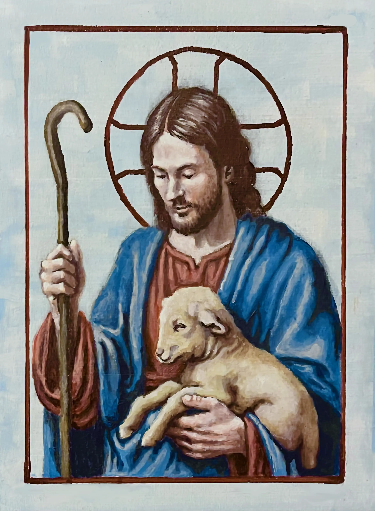

← Back to work
Good Shepherd — Icon Study
Study for a 6x8 icon painting
- Medium
- Acrylic on Wood Panel
- Year
- 2025
- Format
- 6"x8"

Intent
This small study was created as a small-scale image of Christ as the Good Shepherd. The goal was to establish a clear and engaging composition that effectively conveyed the theme of care and guidance, while also allowing for rich textural detail in the final piece.
Process
- The painting was based on traditional iconographic references, but adapted to a more contemporary aesthetic. Using impasto techniques, I built up layers of paint to create texture and depth, enhancing the spiritual quality of the image.